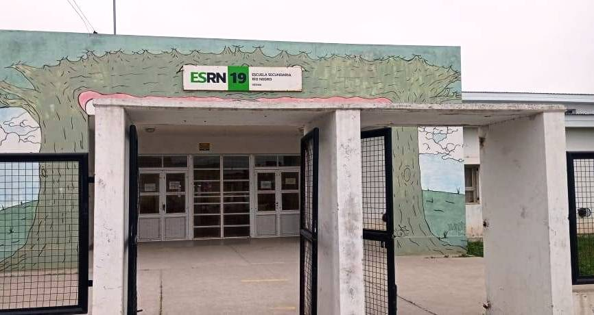

¿Que es el software libre?
Es el software que respeta la libertad de los usuarios y la comunidad.A grandes rasgos, significa que los usuarios tienen la libertad de ejecutar, copiar, distribuir, estudiar, modificar y mejorar el software. Es decir, el (Software libre) es una cuestion de libertad, no de precio. Para entender el concepto, pensa en (Libre) como en (Libertad de expresion), no como en (Bebida gratis). Puede haber pagado dinero para obtener copias de un programa libre, o puede haber obtenido copias sin costo. Pero con independencia de como obtuvo sus copias, siempre tiene la libertad de copiar y modificar el software, incluso de vender copias.
¿Que es la filosofia del software libre?
Software libre significa que los usuarios del software tienen libertad. En concreto, el software libre implica que los usuarios tienen las cuatro libertades esenciales:
- Ejecutar el programa.
- Estudiar y modificar el codigo fuente del programa.
- Redistribuir copias exactas.
- Distribuir versiones modificadas
El software defiere de los objetos materiales (Como una silla, comida o gasolina) en el hecho de que se puede copiar y modificar mucho mas facilmente. Estas posibilidades son las que hacen que el software sea tan util, y se cree que tambien los usuarios de un programa deben ser libres de aprovecharlas, no solo quien lo desarrollo.
Origenes filosoficos y eticos
El movimiento del software libre fue formalizado en los años 80 por Richard Stallman, un programador del MIT, quien fundo la Free Software Foundation (FSF) y el proyecto GNU. Stallman argumentaba que el software propietario impone restricciones injustas y crea dependencia, convirtiendo a los usuarios en simples consumidores sin poder sobre la tecnologia que utilizan.
Su postura se basa en valores como:
- Autonomia: el derecho a entender y modificar las herramientas que usamos.
- Colaboracion: compartir conocimiento en lugar de esconderlo.
- Justicia social: oponerse al poder excesivo de las grandes corporaciones tecnologicas.
Software libre y comunidad
Un aspecto central de esta filosofia es la comunidad. A diferencia del modelode desarrollo cerrado y jerarquico, el software libre promueve un modelo abierto y colaborativo. Proyectos como GNU/Linux, Firevox o LibreOffice son ejemplos de miles de personas trabajando juntas, muchas veces desde distintos paises, motivadas no solo por beneficios economicos, sino por el deseo de contribuir.
Este modelo tambien ha demostrado ser eficiente y sostenible, dando lugar a soluciones robustas, auditables y, en muchos casos, mas seguras que sus equivalentes propietarios.
En resumen
En un mundo cada vez mas digitalizado, donde nuestros datos, nuestras decisiones e incluso nuestras libertdades pueden verse condicionadas por tecnologias opacas, la filosofia del software libre sigue siendo urgente y actual. No se trata solo de que programa usamos, sino de quien tiene el poder sobre nuestras herramientas digitales: si somos nosotros o quienes las diseñan.
Adoptar software libre es, en ultima instancia, un acto de empoderamiento y de resistencia etica frente a un modelo tecnologico que muchas veces busca controlar mas que liberar.
Aqui te dejo un link en el cual podras investigar mas informacion sobre el projecto GNU, donde abarca mucha informacion sobre el tema.
GNU.ORG
Mi experiencia con el software libre
Mi experencia con el software libre en mi establecimiento secundario fue buena y entretenida, utilizamos programas que utilizan el software libre como por ejemplo: LibreOffice, Gimp, entre otros. Los utilizamos para realizar tareas o actividades que nos sirvieron de aprendisaje, gracias a esto nos ayudara en caso de querer cursar en una carrera especificada en informatica y sus respectivas ramas, en mi caso esa es mi idea, ya que voy a estudiar analista de sistemas. En clase aprendimos dos lenguajes de programacion basicos los cuales utilizamos para construir y diseñar una pagina con HTML y CSS, HTML se encarga de el cuerpo o estructura de la pagina, mientras que CSS se encarga de diseñar la apariencia de la pagina. Me encanto tratar este tema y desempeñar trabajos que me ayudaron a acumular experiencia y conocimiento de la rama de programacion y sus lenguajes.
Nuestro secundario es un espacio lindo para aprender y trabajar sobre informatica, la cual es la orientacion de nuestra institucion.
A lo largo del cuatrimestre realizamos unos trabajaos con actividades en el hambito de software libre, actividades como realizar un juego recreativo, un folleto sobre el software libre con formatos de trayecto, recorte, division, etc.